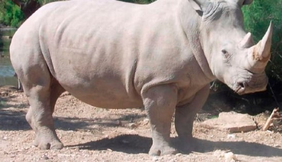

El hábitat típico del rinoceronte blanco incluye bosques densos, sabanas y bosques con aberturas cubiertas de hierba, cerca de fuentes de agua. Es el segundo animal más grande del continente africano después del elefante.
- Su sentido de la vista está muy poco desarrollado
- Poseen un excelente olfato y oído
- Estos imponentes mamíferos suelen pesar entre 800 y 1.400 kilos
- Son animales solitarios y muy territoriales, especialmente cuando se trata de proteger a sus crías.
- El cuerno del rinoceronte no es óseo, sino que está hecho de queratina, la misma sustancia que forma las uñas y pelos de otros animales
Regresar a la página de Inicio